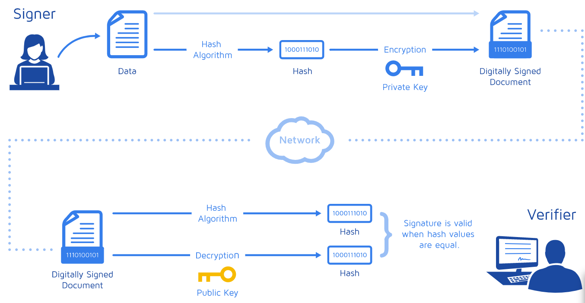

概述
此文章旨在把DKIM记录讲清楚，并且加深自己对这方面的理解和印象，学习过程中参考了以下文档：
数字签名工作原理
DKIM工作原理
how to use nslookup/dig to lookup dkim, dmarc, spf record
dkim是什么
DKIM (DomainKeys Identified Mail) 是一种邮件验证机制，收件人验证发件人的邮件是否被篡改。
工作原理
由MTA(Mail Transfer Agent)，即邮件网关生成一对公私钥对，私钥存放在MTA，用作邮件外发时，在邮件头内生成数字签名。DKIM的数字签名长这个样子：
DKIM-Signature a=rsa-sha1; q=dns;
d=example.com;
i=user@eng.example.com;
s=jun2005.eng; c=relaxed/simple;
t=1117574938; x=1118006938;
h=from:to:subject:date;
b=dzdVyOfAKCdLXdJOc9G2q8LoXSlEniSb
av+yuU4zGeeruD00lszZVoG4ZHRNiYzR
公钥则以TXT记录的形式被添加到邮件域名zone内，DKIM的TXT记录长这个样子：
example._domainkey.itverx.com.ve.86400 IN TXT "v=DKIM1\; g=*\; k=rsa\; p=MIGfM
A0GCSqGSIb3DQEBAQUAA4GNADCBiQKBgQDqFGebZAOHfSGy9CWtA4Uads0zaXAy8TWtW9uIFbyIkFNC67fQVFVjsxlmcEg1oFNp2CrTYF1YNh2gB144c+XY5GVM2fGEYAKx3iBxajWTzsx3SvpQtAZ2Bvf2mV+Te+JtlbpxVuiuiW2Alqwhk1ytTWspf/S3bM73XssV+/mh9wIDAQAB"
当用户收到邮件时，收件方通过DNS记录查询拿到公钥，对数字签名做解密，得到hash值。再对邮件内容以双方协商的算法计算出hash值，两个hash值比对，如果相同则邮件内容未被篡改。
数字签名工作机制一图流： 
如何查询dkim记录
dkim查询需要一个字符串，叫selector，selector可以在邮件头里找到。
通过nslookup/dig查询dkim记录：
nslookup selector._domainkey.domain txt
dig selector._domainkey.domain txt
也可以通过在线web工具查询